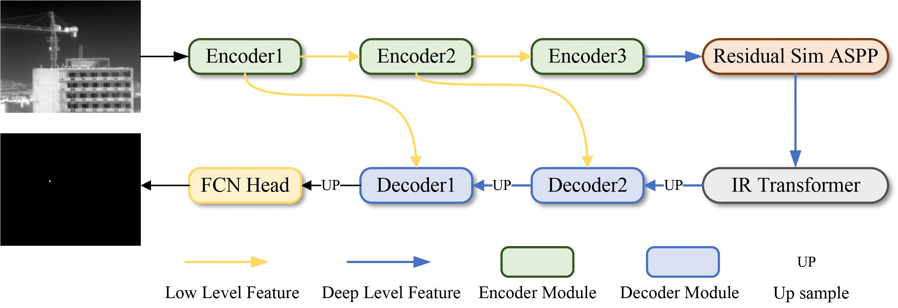
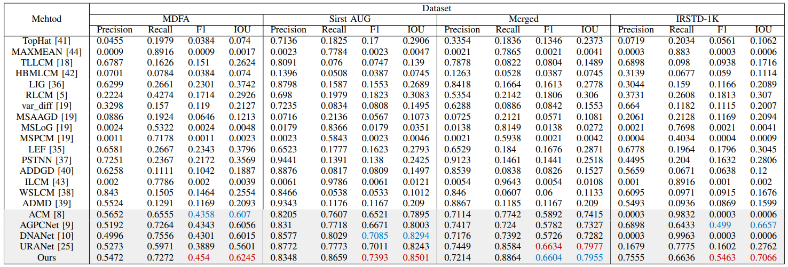
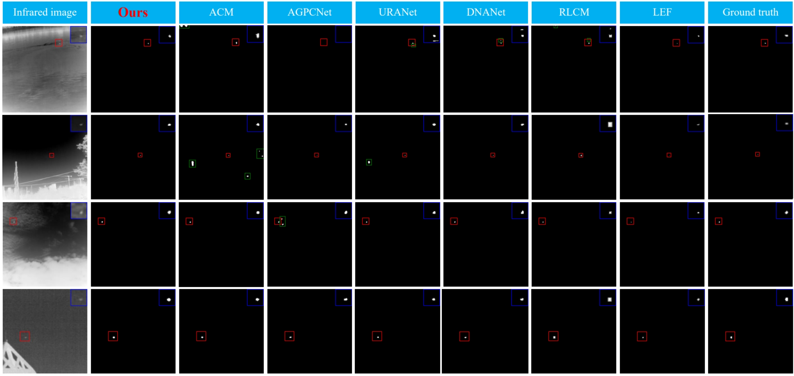

IR-TransDet: Infrared Dim and Small Target Detection With IR-Transformer
Jian Lin1 , Shaoyi Li1 , Liang Zhang2 , Xi Yang1 , Binbin Yan1 , and Zhongjie Meng 1
1. School of Aerospace, Northwestern Polytechnical University
2. China Airborne Missile Academy
Deploy With TensorRT
| Device | FPS |
|---|---|
| RTX 3060 | 415.5 [fp16] |
| RTX 3090 | 776.9 [fp16] |
TensorRT Version 8.5.3.1
Abstract
Infrared dim and small target detection is one of the crucial technologies in the military field, but it faces various challenges such as weak features and small target scales. To overcome these challenges, this paper proposes IR-TransDet, which integrates the benefits of the convolutional neural network and the Transformer to properly extract global semantic information and features of small targets. First, the Efficient Feature Extract Module (EFEM) is designed, which uses depthwise convolution and pointwise convolution to effectively capture the features of the target. Then, an improved Residual Sim Atrous Spatial Pyramid Pooling (ASPP) module is proposed based on the image characteristics of infrared dim and small targets. The proposed method focuses on enhancing the edge information of the target. Meanwhile, an IR-Transformer module is devised, which employs the self-attention mechanism to investigate the relationship between the global image, the target, and neighboring pixels. Finally, experiments were conducted on four open datasets, and the results indicate that IR-TransDet achieves state-of-the-art performance in infrared dim and small target detection. Also, attributed to its lightweight design, IR-TransDet can achieve a frame rate of 776.9 FPS when it is deployed with TensorRT on RTX 3090. To achieve a comparative evaluation of the existing infrared dim and small target detection methods, this study constructed the ISTD-Benchmark tool, which is available at https://github.com/Linaom1214/ISTD-Benchmark.
|  |
|---|
Quantitative Results
|  |
|---|
Qualitative Results
|  |
|---|
ROC Results
 |
 |
 |
 |